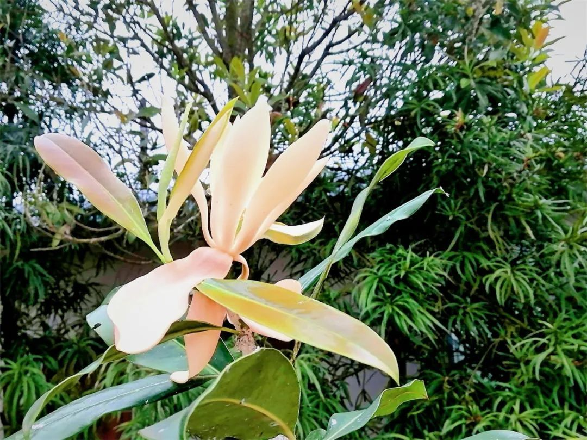
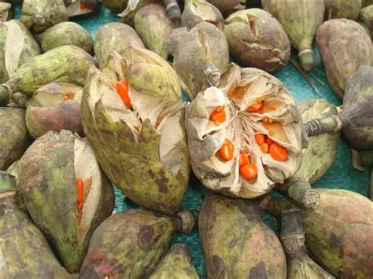

📇
基础名片
Basic Info
华盖木
学名：Pachylarnax sinica
科属：木兰科厚壁木属
保护级别：极危（CR）、国家一级保护植物
学名：Pachylarnax sinica
科属：木兰科厚壁木属
保护级别：极危（CR）、国家一级保护植物
🌿
形态特征
Morphology
形态特征
常绿大乔木；
株：高达40米，胸径1.2米，树皮灰白色，细纵裂，树干基部稍具板根；
叶：叶革质，窄倒卵形或窄倒卵状椭圆形，长15-26(-30)厘米，先端钝圆，基部窄楔形，两面中脉凸起，全缘，侧脉13-16对;叶柄长1.5-2厘米，幼叶不对折，托叶与叶柄离生，无托叶痕；
花：花被片9，3轮，外轮最大；雄蕊约65，花丝短，花药线形，药室内向开裂，药隔长尖；雌蕊群柄粗短，果时长约1厘米；心皮13-16，相互连着，受精后全部合生，每心皮3-5胚珠；
果：聚合果倒卵圆形或椭圆形，蒼荚厚木质，腹缝全裂及顶端2浅裂；
种子：每朞荚种子1-3，垂悬于珠柄内抽出丝状木质部螺纹导管上，种子横椭圆形；
常绿大乔木；
株：高达40米，胸径1.2米，树皮灰白色，细纵裂，树干基部稍具板根；
叶：叶革质，窄倒卵形或窄倒卵状椭圆形，长15-26(-30)厘米，先端钝圆，基部窄楔形，两面中脉凸起，全缘，侧脉13-16对;叶柄长1.5-2厘米，幼叶不对折，托叶与叶柄离生，无托叶痕；
花：花被片9，3轮，外轮最大；雄蕊约65，花丝短，花药线形，药室内向开裂，药隔长尖；雌蕊群柄粗短，果时长约1厘米；心皮13-16，相互连着，受精后全部合生，每心皮3-5胚珠；
果：聚合果倒卵圆形或椭圆形，蒼荚厚木质，腹缝全裂及顶端2浅裂；
种子：每朞荚种子1-3，垂悬于珠柄内抽出丝状木质部螺纹导管上，种子横椭圆形；
🌱
生长环境
Habitat
生长环境
产地：云南（西畴法斗）；
特有：特有单种属；
生境：山沟常绿阔叶林中；
海拔：1300-1500m；
物候：花两性，单生枝顶；
产地：云南（西畴法斗）；
特有：特有单种属；
生境：山沟常绿阔叶林中；
海拔：1300-1500m；
物候：花两性，单生枝顶；
💊
价值作用
Value
价值作用
观赏价值:
花色艳丽而芳香，可选为庭园观赏树种。
研究价值:
对该种植物的分类系统古植物区系等研究有学术价值。
观赏价值:
花色艳丽而芳香，可选为庭园观赏树种。
研究价值:
对该种植物的分类系统古植物区系等研究有学术价值。



人工繁育+野外回归华盖木数量变化
野生成熟华盖木数量变化